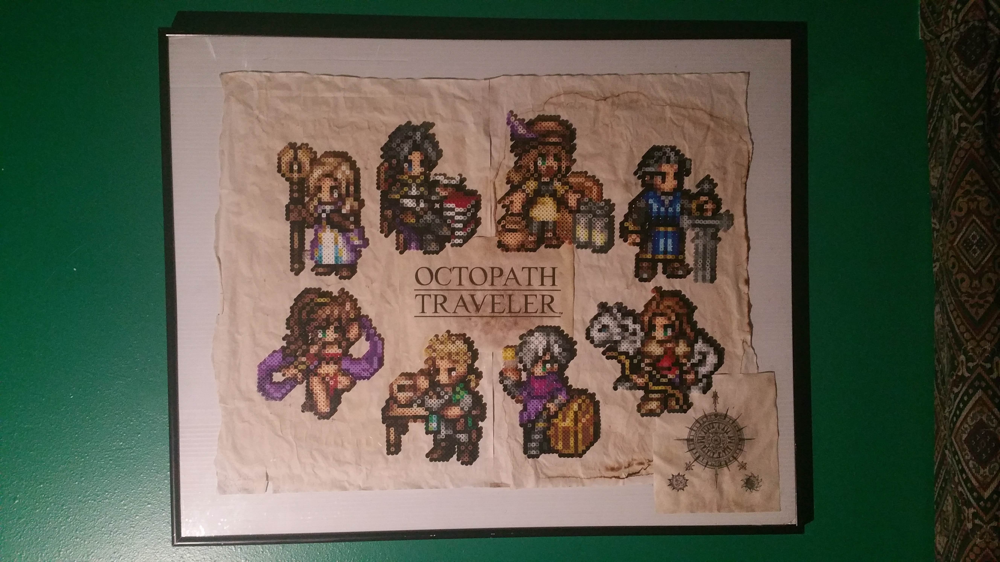

Kyle Santos
Kyle Santos

Bio
Hey! My name is Kyle, a freshman at UW studying Computer Science.
I graduated from Cleveland STEM High School while attending Seattle Central College for the Running Start program.
I'm an avid gamer and mild tech enthusiast. Started to become interested in coding when I was introduced to Scratch in middle school.
Since then, I have some experience in Scratch, HTML/CSS, Snap, Python, and Java.
Currently I'm spending a lot of time messing around in Nintendo's Game Builder Garage.
こんいちは！カエルです。ワシントン大学の二年生です。せんこうはコンピューターです。
ゲームが好きなので、将来、多分ゲームの会社につとめりたいです。一年間ぐらい日本語を習いますけど、
大学の日本語の授業を受けて、あまり日本語上手じゃないです、ごまん。
Unique Facts
|
|
|---|---|
Other Interests
|

|
DevicesPhones>
Laptop: Dell Latitude E7450Smartwatch: Gear S3 Frontier |
|
Perler Bead Projects
I started beading around 2013 (?) after me and my brother got an interesting "melty beads" kit at Walmart one day. Took a long break until the 2020 Covid quarantine, when I realized that I could bring my favorite characters to life from my favorite game at the time, Octopath Traveler. I some coffee paper and framed them up, and they proudly hang on my wall today. I continue to make more mini Perler projects occasionally, while lately I've been working on some software in Java and Google Sheets Apps Script to help me organize my bead projects.
Cool things I've made in the past